Прямая речь
Именно эти слова художников куратор передал искусственному интеллекту — и ИИ создал по ним изображения для выставки.
“”
О том, что было сказано раньше, чем появилась речь — и остаётся после того, как слова заканчиваются.
Это проект с использованием искусственного интеллекта, и здесь он не соавтор и не «зеркало» — скорее проверка на прочность: остаётся ли художник собой, когда его мысль проходит через нечеловеческое восприятие?
Шестнадцать художников. Пять медиумов. Один вопрос.
Читать о выставке →О сообществе
Глубина — арт-сообщество независимых художников, работающее в традиции русского космизма. Фёдоров, Циолковский, Вернадский ставили вопрос о связи человека и Вселенной — Глубина исследует его через современное искусство. Более 40 выставок с 2022 года.
galleryglubina.ru →При поддержке фонда
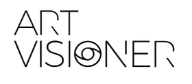
ArtVisioner Foundation — авторский проект Екатерины Чаркиной, направленный на поддержку молодых художников и их творческих проектов с помощью коллабораций и интеграции искусства в различные сферы жизни.
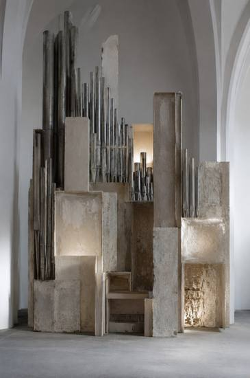
Технологии и человеческая субъектность
Арт-сообщество Glubina представляет групповую выставку «Язык до слова». Шестнадцать художников, пять медиумов, один вопрос: что было сказано раньше, чем появилась речь — и остаётся после того, как слова заканчиваются.
Это и есть весь эксперимент. Не соавторство, не диалог — инструмент, которому отдали часть работы, как когда-то фотоаппарату отдали часть работы у глаза. Художник остаётся собой — это не вопрос и не предмет спора. Подключить ИИ к процессу не значит передать ему чужую субъектность: цитата, стейтмент и работы остаются принадлежать тому, кто их сделал, что бы машина дальше с ними ни сделала. Заменить художника таким образом не получится — машина не создаёт практику, она реагирует на то, что от неё уже есть.
Интереснее другое: что именно делает нечеловеческое восприятие с человеческой формулировкой. У системы нет тела, нет биографии, нет опыта держать кисть в руке — и видно, как этот пробел проявляется в результате.
Иногда ИИ считывает что-то верно. Иногда — мимо, и получается красиво, но пусто. Иногда выходит откровенно странно. Мы не отбирали только удачные результаты — здесь стоит то, что получилось.
Выставка не о превосходстве технологии и не о страхе перед ней. Она о зазоре между тем, что художник сказал словами, и тем, что машина из этого слепила.
Выставка разворачивается в трёх залах — трёх масштабах одного опыта. Ритуал — смысл рождается через действие: жест, повторение, обряд. Здесь работают художники, для которых процесс и телесное усилие важнее результата. Миф — смысл рождается через образ: архетипы, фигуры, сновидческие сюжеты. Здесь живёт то, что передаётся без слов через поколения. Материя — смысл рождается через вещество: скульптура, объект, фактура, след процесса. Здесь форма предшествует смыслу.
«Язык до слова» предлагает посмотреть на искусство как на пространство, где образ появляется раньше объяснения, а смысл возникает раньше возможности его назвать.
Это виртуальная выставка, открытая зрителю вне зависимости от географии. Выставка о тишине, в которой смысл уже звучит, но ещё не стал речью.
Именно эти слова художников куратор передал искусственному интеллекту — и ИИ создал по ним изображения для выставки.
Смысл рождается через действие. Жест, повторение, телесное усилие — здесь процесс важнее результата.
Смысл рождается через образ. Архетипы, фигуры, сновидческие сюжеты — то, что передаётся без слов через поколения.
Смысл рождается через вещество. Скульптура, объект, фактура, след процесса — форма предшествует смыслу.
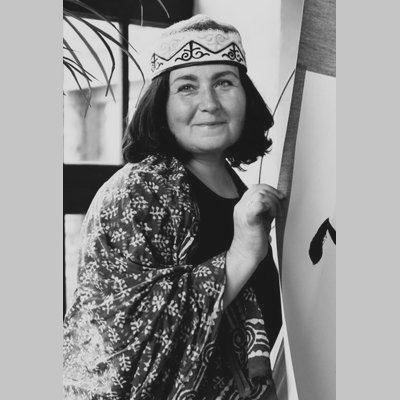
Член AJSAA Токио. Мастер японской каллиграфии. (А)темпоральные связи Востока и Запада.
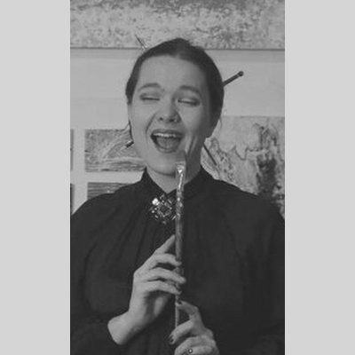
МГХПА им. Строганова. Росписи в Риме и Баку. Абстрактная живопись.
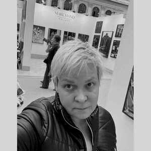
МАХЛ РАХ им. Томского, МГАХИ им. Сурикова. Член МСХ. Живопись, смешанные техники.
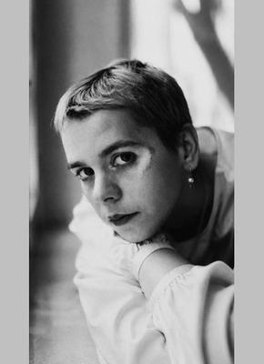
Участница 2-й Триеннале в Garage. Резидент Мастерских Garage 2020. Живопись, античность через современность.
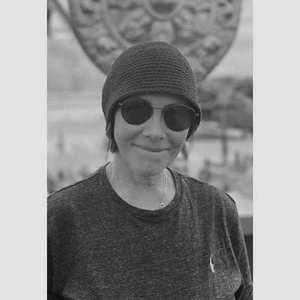
Мастерская Бакштейна. Архстояние 2010, 2022. Человек и природа как сотрудничество.
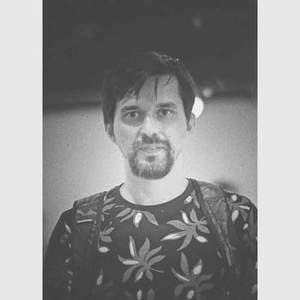
Хаос и порядок. Живое и неживое. Замкнутые системы и относительность пространства.
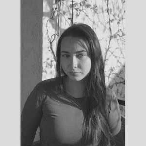
МАРХИ. Работает на стыке архитектуры и искусства. Пространственная форма и пластичность.
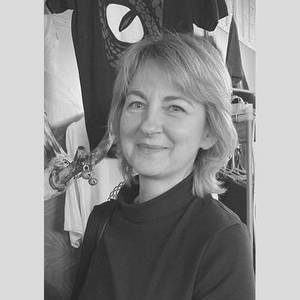
Визуальная мифология. Границы реального в восприятии пространства. Арт-группа BUSIE.
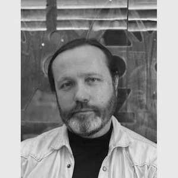
Футуролог, богослов, писатель. Специализируется на органной музыке.
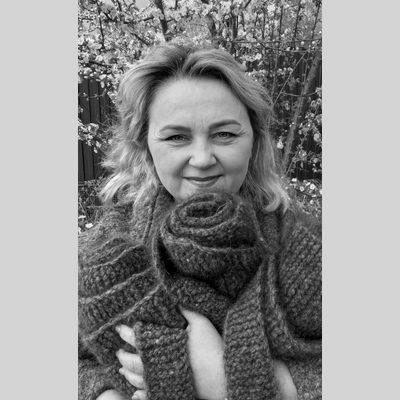
Подольская художественная школа. Участник фотовыставок и проектов. Дизайн одежды.
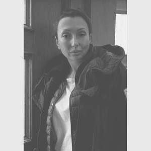
Школа Родченко. МГАХИ им. Сурикова. Член МСХ. Живопись, графика, скульптура, инсталляция.
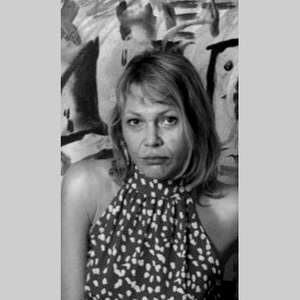
КубГУ, СПбГУП. Кандидат искусствоведения. Иконопись. Лауреат Новороссийской биеннале.
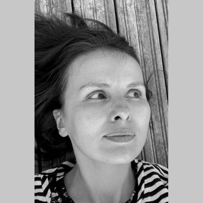
Художественная практика с 2021 года. Выставки в Москве, Санкт-Петербурге, Омске. Участница резиденций.
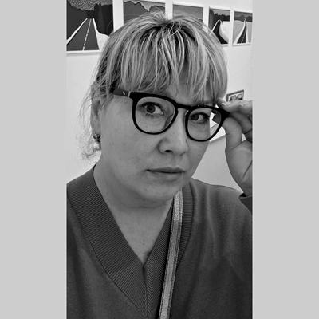
Исследует закономерности в основе жизни: последовательность Фибоначчи, образ медведя как символ силы, тихоходка как метафора жизнеспособности.
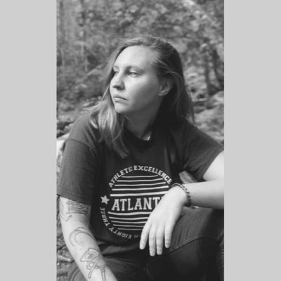
Родилась в Южно-Сахалинске. Окончила СПбИКиТ (факультет фотографии и дизайна) и «Среду обучения» — мастерскую Арсения Жиляева, современное искусство.
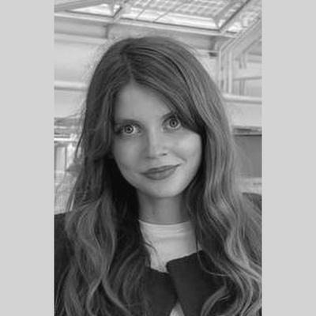
МАРХИ. Пространство как пластическая логика: поиск общего между формой в живописи и архитектурной композицией.
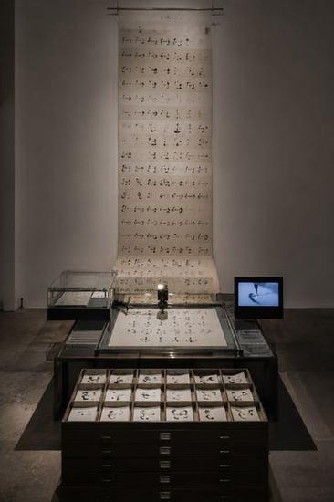
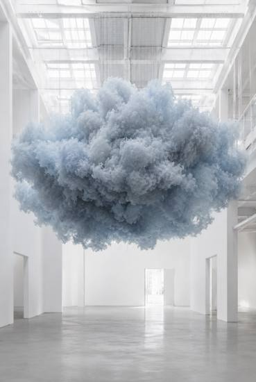

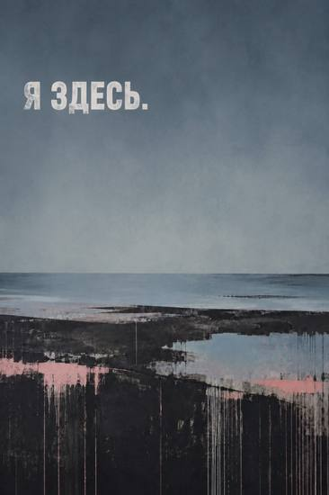

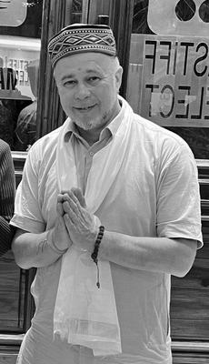
Я вырос в движении — мама создавала заповедники, и мир с детства казался мне местом, которое нужно понимать и беречь. Философский факультет МГУ, религиоведение, мастерская современного искусства Иосифа Бакштейна — меня всегда интересовало, как человек создаёт смыслы. В современном искусстве я исследую именно это: как художник работает с памятью, присутствием и языком образа.
«Больше десяти лет собираю русский концептуализм — не как инвестицию, а как личный разговор. В моём роду — художник Бруни, и я чувствую эту связь как обязательство перед искусством.»
Я дружу со многими современными художниками, но особое впечатление оставила Марина Абрамович — я прошёл её курс, и это изменило мой взгляд на то, что значит быть по-настоящему присутствующим. Работал с Олегом Куликом, Мизиным и Шабуровым, Владимиром Потаповым. Знаком почти со всеми ключевыми галеристами и коллекционерами страны. Именно поэтому виртуальный формат для меня — не упрощение, а отдельный художественный язык, у которого свои законы и своя сила.
Сейчас я строю школу в Изобильном — на горе в Крыму. Место, где современное искусство и практики присутствия соединяются в одном пространстве. Я хочу, чтобы человек приезжал и останавливался — слышал себя, открывал творчество как способ жить, а не только как профессию. Искусство меняет качество жизни. Я в это верю!
Если вы художник, фотограф, музыкант, архитектор или просто человек, которому есть что сказать — напишите мне. Я открыт к совместному творчеству, новым форматам и неожиданным союзам. Хорошие проекты рождаются из встреч.
Арт-сообщество, созданное художницами и кураторами Светланой Дёминой и Юлией Назар. Объединяет независимых художников из разных городов России и зарубежья.
Философия сообщества — современное искусство и глубинные исследования. Основа — взаимосвязи макрокосма и микрокосма. Резиденты работают в живописи, скульптуре, инсталляции, перформансе, фотографии, керамике, графике и поэзии.